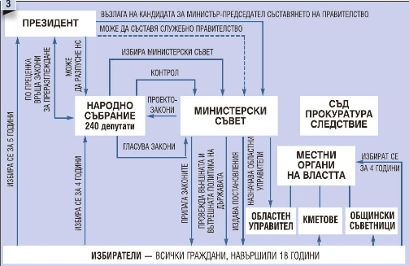
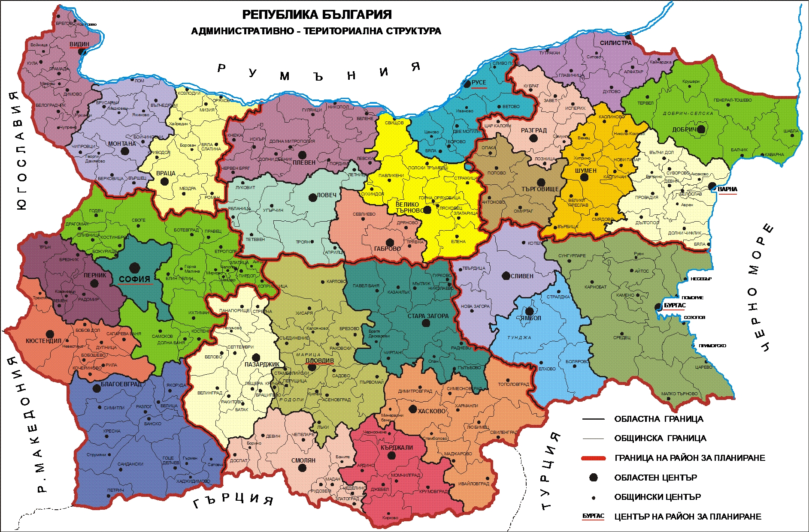

Икономика
- Развитие
- През първата половина на 20 век. - преобладава земеделието, но е примитивно и слабо развито. През 30-те години, когато е имало политическа, промишлеността започва да се развива по-бързо. Има голям внос на промишлени стоки. Обслужващите икономически дейности са слабо развити.
- В края на 40-те години на 20 век - Развива се железопътния и автомобилния транспорт. Изграждат се хотели, хижи, къмпинги и др. Държавата отнема частните предприятия и кооперира земеделските земи. Управлението на икономиката се извършва от нея. Търговията е основно с държави от социалистическия блок.
- След 1990 г. до сега - Държавната икономика преживява преход към пазарно стопанство. Има рязък спад на промишленото производство, загуба на външни пазари и финансови кризи. За преодоляването на такива проблеми се налага приемането на паричен съвет (валутен борд), който има за задача да ограничи намесата на държавата в развитието на икономиката. България е част от ЕС от 2007 г. Това налага да се повиши качеството на произведената продукция, намаляване на замърсяването на околната среда, да се увеличат доходите на населението.
- Фактори
- Екология - извършва се постоянен контрол на отрицателното влияние на икономиката върху природната среда
- Историческо миналоц - влиянието му намалява, но икономически различия по територията на България са резултат от миналото. Пример за това е изоставането на икономика в приграничните територии на страната.
- Природни условия и ресурси - влияе върху напредъка на земеделието, туризма, транспорта и др. Дунавското и Черноморското крайбрежие за предимства за развитието на българската икономика.
- Население - намаляването на броя на населението в страната задържа развитието на икономиката поради застаряването на народа и недостига на млада работна ръка. Нараства влиянието на образованието и квалификацията на работната сила.
- Политика на държавата - влиянието ѝ се променя след преминаването на България в ЕС. Сега законите на страната следват решенията и общата политика на ЕС. Тази политика е насочена към привличането на чуждестранни инвестиции, свободна търговия и свободно движение на хора.
- Основни икономически дейности
- Добивни икономически дейности - земеделието осигурява 6 - 8% от крайната продукция на икономиката. Основни земеделски производства са растениевъдство и животновъдството. Те се развиват под влиянието на природните и икономически фактори, на потребностите на населението, на опита и традициите му в отглеждането на земеделски култури и породи животни. Земеделито разчита на финансиране по програмите и фондовете на ЕС.

